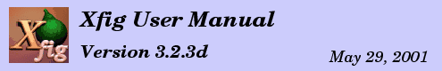

Getting and Installing Xfig
This is the installation procedure of
xfig.
See the
README file for more details.
For information about how to use internationalization facility
of
xfig,
see also
Internationalization.
- Get the source of xfig (xfig.3.2.3d.full.tar.gz)
and gunzip and untar the file:
Either do:
- gunzip -c xfig.3.2.3d.full.tar.gz | tar xvf -
or
- gunzip xfig.3.2.3d.full.tar.gz
tar xvf xfig.3.2.3d.full.tar
You can get the source from
ftp://www-epb.lbl.gov/xfig,
http://www.xfig.org/xfigdist,
ftp://ftp.x.org/contrib/applications/drawing_tools/xfig
and its mirror sites
or from any CTAN machine
(
ftp://ftp.tex.ac.uk/pub/archive/graphics,
for example).
- Edit the Imakefile if you need to customize it:
-
If you want to install xfig in a directory other than
the default X11 binary directory, add "BINDIR=<directory>" at the
top of the Imakefile, where <directory> is the full path of the
directory in which you want xfig to be installed.
Also, you may have to redefine MKDIRHIER because make looks for it relative to
the BINDIR variable.
Set it to: "MKDIRHIER = /bin/sh <path>/mkdirhier"
where <path> is the path to the mkdirhier script or program.
-
To use JPEG, you must have JPEG library (Version 5b or later).
If you already has the JPEG library installed in your system area then make
sure the USEINSTALLEDJPEG variable is uncommented (the default).
If you don't have JPEG installed, get the source from
ftp://ftp.uu.net/graphics/jpeg
or ftp://ftp.x.org/contrib/libraries
and comment out the USEINSTALLEDJPEG variable,
and set the JPEGLIBDIR variable to the directory
where source of JPEG library is stored.
** Make sure you delete or rename any older version of the JPEG
library you might have on your system. Some Linux systems come
with an older version which is incompatible with xfig.
If you don't want JPEG support, comment out `#define USEJPEG'
using the XCOMM comment directive (e.g. XCOMM #define USEJPEG).
-
If you *don't* want PNG support, comment out #define USEPNG.
If you want to be able to import PNG images (the default),
make sure `#define USEPNG' is uncommented.
You need the PNG library (-lpng) and the zlib (-lz) compression library.
You can find the PNG sources at http://www.libpng.org/pub/png/libpng.html and
the zlib sources at ftp://ftp.cdrom.com/pub/infozip/zlib.
-
To enable XPM support, uncomment `#define USEXPM'
and modify the definition of XPMLIBDIR if necessary.
To use XPM, you must have XPM3 package (Version 3.4c or later).
-
If you want to use Xaw3d (Three-D Athena Widget) library,
uncomment `XAWLIB = -lXaw3d'.
When Xaw3d is used instead of Xaw,
the buttons will appear 3 dimensional.
The Xaw3d library should be compiled without -DARROW_SCROLLBAR.
-
If your system's printer capability file (printcap) is not in /etc/printcap,
change the PRINTCAP variable to reflect this.
-
Small Icons -
If you have a small screen (e.g. 800x600 or so) you may want to use the small
mode panel buttons for xfig.
If so, uncomment the `#define USESMALLICONS' line.
-
If your system doesn't have strcasecmp()
and/or strncasecmp(), uncomment
- `HAVE_NO_STRCASECMP = -DHAVE_NO_STRCASECMP'
and/or
- `HAVE_NO_STRNCASECMP = -DHAVE_NO_STRNCASECMP'.
-
If your system doesn't have strstr(),
uncomment `#define NOSTRSTR'.
-
If your system doesn't have strerror()
(but supports sys_errlist),
uncomment `NEED_STRERROR = -DNEED_STRERROR'.
-
If you want to enable internationalization facility of xfig,
uncomment ``#define I18N'' (remove (XCOMM).
See Internationalization for more information.
Suggestion to Package Maintainers:
If you are preparing a package to be distributed to the world
in the binary form, it is recommended to enable
internationalization facility
so that the package can be used also in Japan or Korea.
Check the README file for more information about specific systems.
- Type xmkmf to generate a Makefile for your system.
- Type make to compile xfig.
- After the compilation has finished, type
make install
to copy the files to the appropriate directories.
If you don't use make install and copy files manually,
note that:
-
the xfig executable should go in your command search path,
-
Fig.ad and Fig-color.ad should go in the app-defaults
directory with the names Fig and Fig-color respectively,
-
The CompKeyDB file , the Doc/html directory, and the
xfig-howto.pdf and xfig.pdf files should be copied into
the directory specified by the XFIGLIBDIR variable in the Imakefile
- Type make install.man
to copy the manual pages to the appropriate directory.
Here is the installation procedure for
TransFig (
fig2dev).
See
README file in for details.
For information about how to use internationalization facility
of
fig2dev,
see also
Internationalization.
- Get the source of TransFig (transfig.3.2.3d.tar.gz),
and untar the file.
It should be available at the same site as xfig.
-
You shouldn't need to change the toplevel
Imakefile or the Imakefile in fig2dev/dev.
Edit fig2dev/Imakefile if you need to customize it:
-
If you don't want to use NFSS2 font selection for LaTeX text,
comment out `DDNFSS = -DNFSS' using the XCOMM directive.
If you don't want to use epsfig macros as distributes with LaTeX2e,
comment out `DDEPSF = -DEPSF' in the same way.
Hint: Users of LaTeX2e will probably want to include both of these
options; users of LaTeX 2.09 will probably want to include neither.
-
To use JPEG,
you must have JPEG library (Version 5b or later).
If you already if the JPEG library installed in your system area then make
sure the USEINSTALLEDJPEG variable is uncommented (the default).
If you don't have JPEG installed, get the source from
ftp://ftp.uu.net/graphics/jpeg
or ftp://ftp.x.org/contrib/libraries
If you don't want JPEG support, comment out `#define USEJPEG'
using the XCOMM comment directive (e.g. XCOMM #define USEJPEG).
-
If you *don't* want PNG support, comment out #define USEPNG.
If you want to be able to import PNG images (the default),
make sure `#define USEPNG' is uncommented.
You need the PNG library (-lpng) and the zlib (-lz) compression library.
You can find the PNG sources at http://www.libpng.org/pub/png/libpng.html and
the zlib sources at ftp://ftp.cdrom.com/pub/infozip/zlib.
-
To enable XPM support, uncomment `#define USEXPM'
and change XPMLIBDIR if necessary.
To use this facility,
you must have XPM3 package (Version 3.4c or later).
-
If your system doesn't have strcasecmp()
and/or strncasecmp(), uncomment
- `HAVE_NO_STRCASECMP = -DHAVE_NO_STRCASECMP'
and/or
- `HAVE_NO_STRNCASECMP = -DHAVE_NO_STRNCASECMP'.
-
If your system doesn't have strstr(),
uncomment `#define NOSTRSTR'.
-
If your system doesn't have strerror()
(but supports sys_errlist),
uncomment `NEED_STRERROR = -DNEED_STRERROR'.
-
On Solaris 2,
you must add -lnsl to LOCAL_LIBRARIES.
On HP-UX, you may need to reduce optimization level to +O2.
-
If you want to enable internationalization facility of fig2dev,
uncomment ``#define I18N'' (remove (XCOMM).
See Internationalization for more information.
Suggestion to Package Maintainers:
If you are preparing a package to be distributed to the world
in the binary form, it is recommended to enable
internationalization facility
so that the package can be used also in Japan or Korea.
See README and Imakefile for more details.
- Type xmkmf to generate the Makefile.
- Type make Makefiles to generate the
Makefiles. Note the ``s'' in ``Makefiles''.
- Type make to compile
TransFig and fig2dev.
- Type make install
to copy the executable and files to the appropriate directories.
- Type make install.man
to copy the manual pages to the appropriate directory.
In addition to
xfig and
transfig (
fig2dev).
you will also need to install
GhostScript and
netpbm,
- xfig invoke GhostScript (gs command)
when displaying PostScript images,
or exporting in some formats.
GhostScript must be compiled with pbmraw, ppmraw, pcx256, jpeg,
and tiff24nc driver.
GhostScript can be found at
ftp://prep.ai.mit.edu/pub/gnu
and its mirror sites,
or at
ftp.cs.wisc.edu/ghost/aladdin.
- fig2dev invoke command in netpbm package
when exporting in some formats.
Commands that may actually be used are:
pbmtoxbm, pgmtopbm, pnmdepth, pnmscale, pnmtopng, pnmtotiff,
ppmquant, ppmtoacad, ppmtogif, ppmtopcx, ppmtopgm, and ppmtoxpm.
netpbm can be found at
ftp://ftp.x.org/contrib/utilities or its
mirror sites
in /contrib/utilities,
or at
ftp://ftp.cdrom.com/pub/X11/contrib/utilities.
-
 Xaw3d (Three-D Athena Widget) library
Xaw3d (Three-D Athena Widget) library
- If Xaw3d is used instead of normal Xaw,
widgets such as buttons will have 3-D appearance.
It is available from
ftp://ftp.x.org/contrib/widgets
and its mirror sites
in /contrib/widgets.
-
XPM3 package
-
This package provides facilities to handle images in XPM format.
It is available from
ftp://ftp.x.org/contrib/libraries
and its mirror sites
in /contrib/libraries.
-
JPEG library
-
This package provides facilities to handle images in JPEG format.
The official distribution site is
ftp://ftp.uu.net/graphics/jpeg.
It is also available from
ftp://ftp.x.org/contrib/libraries
and its mirror sites
in /contrib/libraries.
Here is a list of related applications.
See also
Scientific Applications on Linux (SAL)
for more applications for Linux
(many of them may also work on other UNIX-compatible platforms) and
http://duke.usask.ca/~macphed/soft/fig/
which a site maintained by Ian MacPhedran that has some other links for
FIG-related applications.
-
fig2dev (TransFig)
-
fig2dev provides the facility to
convert figures created with xfig into various formats.
You must have fig2dev because
xfig invokes it when
Exporting
or Printing.
fig2dev is part of the TransFig package.
-
GhostScript
-
xfig will invoke GhostScript (the gs command)
when displaying an imported PostScript image.
GhostScript is copyrighted by Aladdin Enterprises,
but it is (at least older versions are) distributed under GPL,
and it is available from
ftp://prep.ai.mit.edu/pub/gnu
and its mirror sites,
or ftp.cs.wisc.edu/ghost/aladdin.
-
cdraw2fig
-
Converts `Cheap Draw' format to Fig format.
Cheap Draw 2.0 was written by Bob Pratt and is available from the UNIXPC
archives at osu-cis.
-
GIMP
-
A comprehensive image manipulation program, GIMP (Gnu Image Manipulation Program)
is freely available from http://www.gimp.org/.
-
gnuplot
-
gnuplot is a plotting package which can output in Fig and other formats.
The official distribution site is
ftp://ftp.dartmouth.edu/pub/gnuplot,
but you can also get it from the comp.sources.misc archive newsgroup.
-
gzip (gunzip)
-
xfig will invoke gunzip when reading gzipped files.
gzip (gunzip) is a product of the
Free Software Foundation,
and is available from
ftp://prep.ai.mit.edu
and its mirror sites.
-
hp2xx
-
hp2xx can convert HP-GL files into other formats
such as PostScript, LaTeX or Fig.
It is available from
ftp://ftp.gnu.org/gnu/hp2xx.
-
chemtool
- A chemical structure editor for X11 available from
http://www.uni-ulm.de/~s_tvolk/chemtool
that writes Fig output (and relies on transfig for anything more fancy than xbm)
-
mifXfig
-
mifXfig will convert files
between MIF format (of Framemaker(TM)) and Fig format.
See
http://www.ida.liu.se/~vaden/teaching/m2f/
for details.
-
Msphinx
-
A friendly package to handle satellite images.
- Main features:
- Msphinx includes two types of analysis and processing functions:
- Functions to process the basic data geometry and projection planes.
- Functions to manipulate and modify the graphic display and print.
- Communication capabilities:
-
- Data writes from external user programs (C or Fortran) into the memory planes.
- User-to-user data exchange (text or images).
- User image data base visualisation.
- Direct links to other packages:
- Mgraph (2d and contouring plotting)
- HDFLook (HDF read write files)
- Xfig (Facility for Interactive Generation of figures)
- mpeg_encode (mpeg format nimations)
Find it at: http://loasys.univ-lille1.fr/Msphinx/Msphinx_gb.html
-
netpbm
-
fig2dev will invoke the appropriate command from the netpbm package
when exporting figures
to bitmap formats.
netpbm is available from
ftp://ftp.x.org/contrib/applications/drawing_tools/xfig
and its mirror sites
or from
ftp://ftp.cdrom.com/pub/X11/contrib/utilities.
-
figbuild
-
figbuild reads xfig files (Version 3.x, tested with 3.1, 3.2) plus
its own config file for heights, and generates a Radiance input
file. Written by Peter Apian-Bennewitz at Fraunhofer ISE, Germany.
See:
http://www.ise.fhg.de/radiance/pabs-toolbox/figbuild/figbuild.html
-
pic2fig
-
Convertes PIC format (used with troff, ditroff, etc) to Fig format.
It is available from
ftp://ftp.cs.orst.edu/localsrc/graphics
or ftp://ftp.x.org/contrib/utilities
and its mirror sites
in /contrib/utilities.
-
plot2fig
-
Converts UNIX plot format to Fig format.
Available from any GNU site.
-
plotutils (GNU)
-
includes an application for XY plotting (graph),
a plot filter (plot), a Tektronix translator (tek2plot),
a program for displaying font character maps (plotfont),
and a library for drawing 2-D vector graphics (libplot),
all of which produce output in xfig format.
by Robert S. Maier <[email protected]>.
See:
http://www.gnu.org/software/plotutils/plotutils.html
-
pstoedit
-
pstoedit can convert PostScript files into Fig format.
It is available from
ftp://ftp.x.org/contrib/applications/tgif/pstoedit
and its mirror sites
in /contrib/applications/tgif/pstoedit.
-
xfigbar and xfigpie
-
Two C programs to produce bar and pie charts as Fig
files. Written by John Conover <[email protected]>,
these programs are available by sending email thus:
mail [email protected]
Subject: archive
get xfigutilities.shar
-
xgraph
-
xgraph is a plotting package which runs in X11.
The version on
ftp://iworks.ecn.uiowa.edu
in comp.hp can output Fig files.
-
xpaint
-
xpaint is a painting program which runs under X11.
It is available from
http://www.danbbs.dk/~torsten/xpaint
and any SunSite machines such as
ftp://sunsite.unc.edu/pub/Linux/apps/graphics/draw/.
-
xv
-
xv can be used to display images in various formats
and allows some editing of those images (cropping, color editing scaling/rotating etc).
By default, xfig will invoke xv
when the Edit Image button is pressed
in the edit PICTURE object panel.
xv is shareware and is available via anonymous ftp from
ftp://ftp.cis.upenn.edu/pub/xv.
[
Contents |
Introduction |
Credits ]